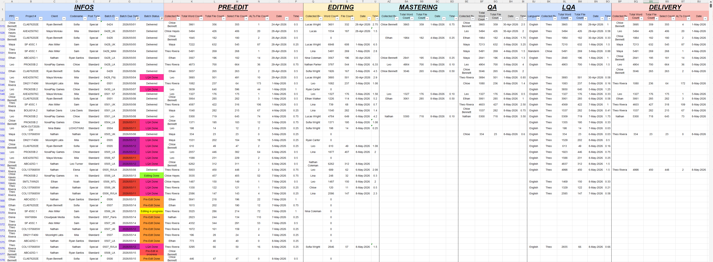
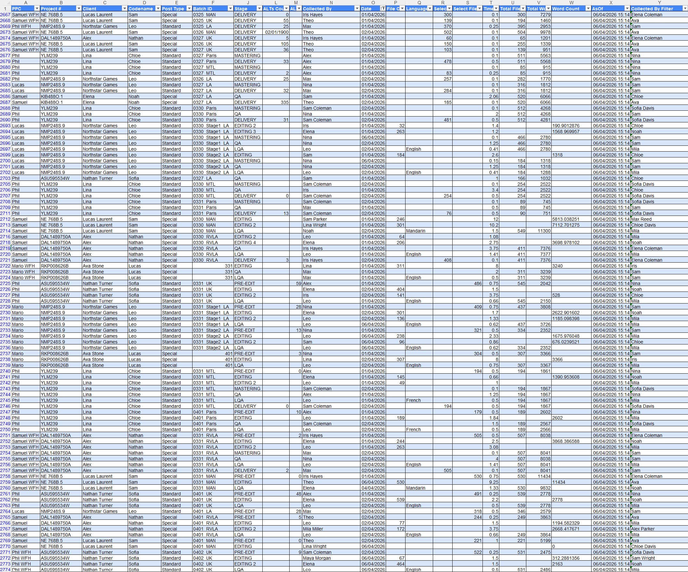
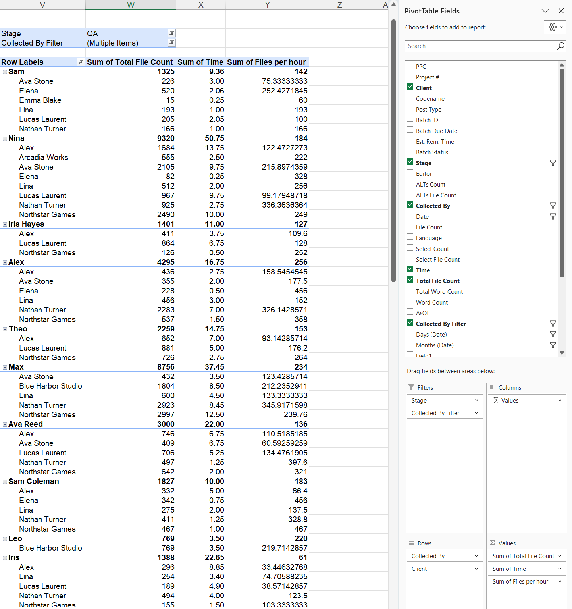
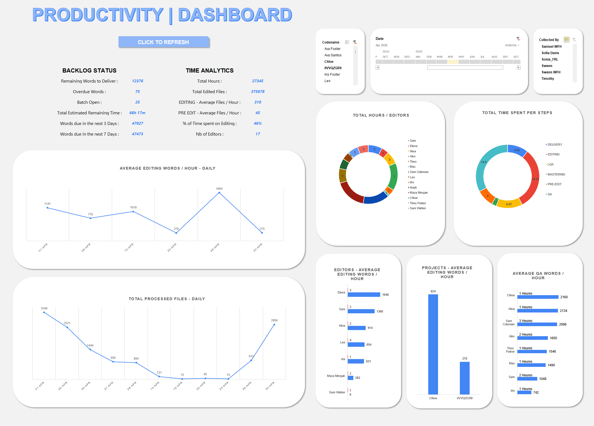

Dashboard post-production : du tracking manuel au pilotage dynamique
Transformation d'un fichier de suivi par tâches en base de données exploitable, avec tableaux croisés dynamiques et dashboard pour analyser la charge, la productivité et les temps restants.
1. Situation
L'équipe suivait ses tâches dans un tableau détaillé pratique pour le suivi quotidien mais difficile à exploiter pour l'analyse. Les informations étaient réparties par étapes, par personnes, par dates et par projets, ce qui rendait complexe l'identification des tâches les plus chronophages, des projets les plus demandants et des performances mensuelles individuelles.
2. Solution
J'ai créé une macro VBA capable de transformer automatiquement le tracking en base de données normalisée. Cette database alimente ensuite des tableaux croisés dynamiques et un dashboard permettant d'analyser les volumes, les temps, les projets, les tâches, les étapes de production et les performances par période, par collaborateur ou par projets.




3. Résultat
Sans ajouter de saisie supplémentaire pour l’équipe, l’outil transforme les données existantes en indicateurs exploitables. L'équipe dispose d'un outil clair pour comprendre où le temps est passé, anticiper la charge restante, comparer les performances et mieux répartir les tâches selon les profils et les besoins.